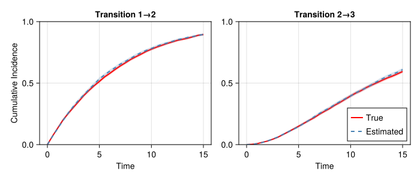
Long Tests Status
Statistical Recovery of Parameters
1. Overview
All long tests validate statistical parameter recovery with relative tolerances of 15-35% depending on the complexity of the model and inference method.
Last full run: January 23, 2026
Branch: penalized_splines
NoteTest Suite Cleanup (2026-01-23)
Long test suite consolidated from 24 files to 13 files. Deleted redundant/deprecated tests: longtest_aft_suite.jl, longtest_sir.jl, longtest_phasetype.jl, longtest_pijcv_loocv.jl, longtest_sensitivity_check.jl, longtest_smooth_covariate_recovery.jl, longtest_tensor_product_recovery.jl, longtest_spline_suite.jl.
Helper files moved to src/: longtest_config.jl, longtest_helpers.jl, phasetype_longtest_helpers.jl.
1.1 Overall Status
| Test Suite | File | Status |
|---|---|---|
| Parametric Suite | longtest_parametric_suite.jl |
✅ |
| Exact Markov | longtest_exact_markov.jl |
✅ |
| MCEM Parametric | longtest_mcem.jl |
✅ |
| MCEM Splines | longtest_mcem_splines.jl |
✅ |
| MCEM TVC | longtest_mcem_tvc.jl |
✅ |
| Phase-Type Exact | longtest_phasetype_exact.jl |
✅ |
| Phase-Type Panel | longtest_phasetype_panel.jl |
✅ |
| Robust Parametric | longtest_robust_parametric.jl |
✅ |
| Robust Markov/PT | longtest_robust_markov_phasetype.jl |
✅ |
| Simulation Dist | longtest_simulation_distribution.jl |
✅ |
| Simulation TVC | longtest_simulation_tvc.jl |
✅ |
| Spline Exact | longtest_spline_exact.jl |
✅ |
| Variance Validation | longtest_variance_validation.jl |
✅ |
Total: 13 long test files
2. Exponential Hazard Models
2.1 exp_exact_nocov
Test: exp_exact_nocov | Passed: ✅ | Time: 0.0s
| Parameter | True | Estimated | SE | CI Low | CI High | Rel Err % | Covered |
|---|---|---|---|---|---|---|---|
| h12_rate | 0.15 | 0.1506 | 0.0053 | 0.137 | 0.1641 | 0.4 | ✓ |
| h23_rate | 0.12 | 0.1281 | 0.0052 | 0.1146 | 0.1415 | 6.7 | ✓ |
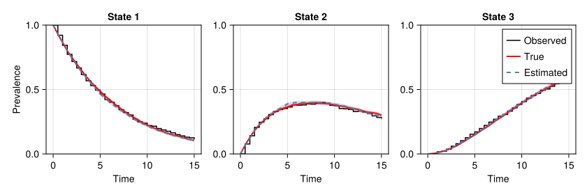
2.2 exp_exact_fixed
Test: exp_exact_fixed | Passed: ✅ | Time: 0.0s
| Parameter | True | Estimated | SE | CI Low | CI High | Rel Err % | Covered |
|---|---|---|---|---|---|---|---|
| h12_beta | 0.5 | 0.3753 | 0.0632 | 0.2126 | 0.538 | 24.9 | ✓ |
| h12_rate | 0.15 | 0.1588 | 0.0068 | 0.1412 | 0.1764 | 5.9 | ✓ |
| h23_beta | 0.5 | 0.3806 | 0.0761 | 0.1846 | 0.5765 | 23.9 | ✓ |
| h23_rate | 0.12 | 0.1221 | 0.0067 | 0.1048 | 0.1394 | 1.8 | ✓ |


2.3 exp_exact_tvc
Test: exp_exact_tvc | Passed: ✅ | Time: 0.0s
| Parameter | True | Estimated | SE | CI Low | CI High | Rel Err % | Covered |
|---|---|---|---|---|---|---|---|
| h12_beta | 0.5 | 0.4832 | 0.0633 | 0.3202 | 0.6462 | 3.4 | ✓ |
| h12_rate | 0.15 | 0.1493 | 0.0064 | 0.1327 | 0.1659 | 0.4 | ✓ |
| h23_beta | 0.5 | 0.5306 | 0.0943 | 0.2877 | 0.7734 | 6.1 | ✓ |
| h23_rate | 0.12 | 0.1165 | 0.01 | 0.0908 | 0.1421 | 2.9 | ✓ |
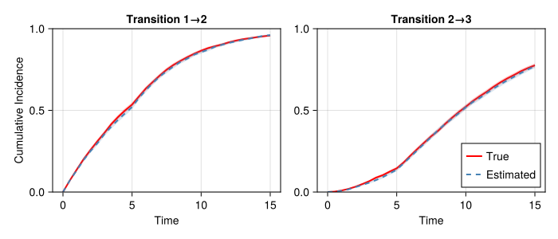

2.4 exp_panel_nocov
Test: exp_panel_nocov | Passed: ✅ | Time: 0.0s
| Parameter | True | Estimated | SE | CI Low | CI High | Rel Err % | Covered |
|---|---|---|---|---|---|---|---|
| h12_rate | 0.15 | 0.1558 | 0.0054 | 0.1419 | 0.1697 | 3.9 | ✓ |
| h23_rate | 0.12 | 0.1175 | 0.0059 | 0.1022 | 0.1328 | 2.1 | ✓ |

2.5 exp_panel_fixed
Test: exp_panel_fixed | Passed: ✅ | Time: 0.0s
| Parameter | True | Estimated | SE | CI Low | CI High | Rel Err % | Covered |
|---|---|---|---|---|---|---|---|
| h12_beta | 0.5 | 0.4897 | 0.0674 | 0.3162 | 0.6632 | 2.1 | ✓ |
| h12_rate | 0.15 | 0.1516 | 0.0073 | 0.1329 | 0.1704 | 1.1 | ✓ |
| h23_beta | 0.5 | 0.5413 | 0.0905 | 0.3081 | 0.7746 | 8.3 | ✓ |
| h23_rate | 0.12 | 0.1147 | 0.0082 | 0.0935 | 0.1359 | 4.4 | ✓ |
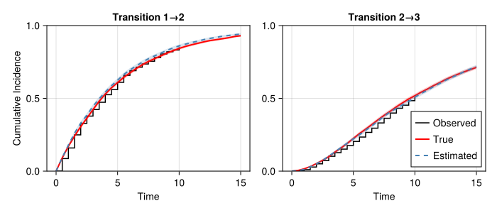
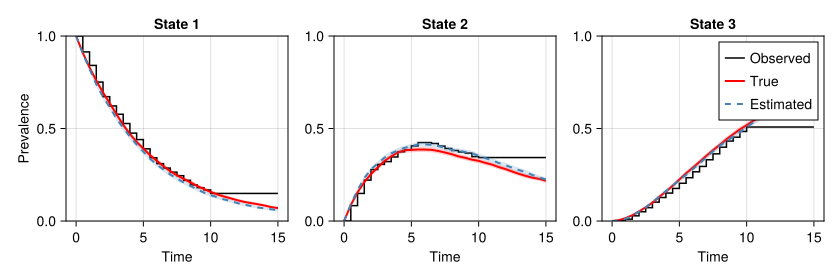
2.6 exp_panel_tvc
Test: exp_panel_tvc | Passed: ✅ | Time: 0.0s
| Parameter | True | Estimated | SE | CI Low | CI High | Rel Err % | Covered |
|---|---|---|---|---|---|---|---|
| h12_beta | 0.5 | 0.498 | 0.0693 | 0.3194 | 0.6766 | 0.4 | ✓ |
| h12_rate | 0.15 | 0.15 | 0.0065 | 0.1332 | 0.1668 | 0.0 | ✓ |
| h23_beta | 0.5 | 0.5008 | 0.0968 | 0.2514 | 0.7502 | 0.2 | ✓ |
| h23_rate | 0.12 | 0.1261 | 0.0104 | 0.0994 | 0.1528 | 5.1 | ✓ |

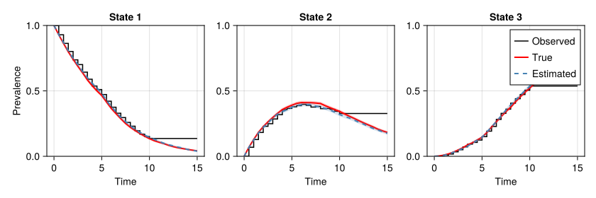
3. Weibull Hazard Models
3.1 wei_exact_nocov
Test: wei_exact_nocov | Passed: ✅ | Time: 0.0s
| Parameter | True | Estimated | SE | CI Low | CI High | Rel Err % | Covered |
|---|---|---|---|---|---|---|---|
| h12_scale | 0.15 | 0.1597 | 0.0098 | 0.1343 | 0.185 | 6.4 | ✓ |
| h12_shape | 1.3 | 1.2714 | 0.0301 | 1.1938 | 1.349 | 2.2 | ✓ |
| h23_scale | 0.12 | 0.1459 | 0.01 | 0.1201 | 0.1716 | 21.5 | ✗ |
| h23_shape | 1.1 | 1.0215 | 0.0306 | 0.9427 | 1.1004 | 7.1 | ✓ |
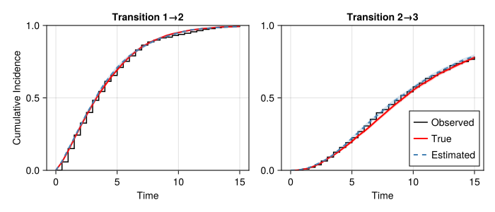
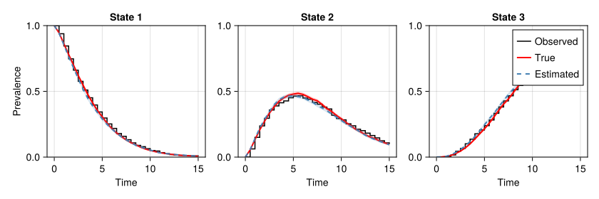
3.2 wei_exact_fixed
Test: wei_exact_fixed | Passed: ✅ | Time: 0.0s
| Parameter | True | Estimated | SE | CI Low | CI High | Rel Err % | Covered |
|---|---|---|---|---|---|---|---|
| h12_beta | 0.5 | 0.5138 | 0.0656 | 0.3448 | 0.6828 | 2.8 | ✓ |
| h12_scale | 0.15 | 0.1518 | 0.0105 | 0.1249 | 0.1788 | 1.2 | ✓ |
| h12_shape | 1.3 | 1.2936 | 0.0304 | 1.2152 | 1.372 | 0.5 | ✓ |
| h23_beta | 0.5 | 0.4856 | 0.0675 | 0.3117 | 0.6595 | 2.9 | ✓ |
| h23_scale | 0.12 | 0.124 | 0.0102 | 0.0978 | 0.1501 | 3.3 | ✓ |
| h23_shape | 1.1 | 1.0763 | 0.0317 | 0.9948 | 1.1579 | 2.2 | ✓ |
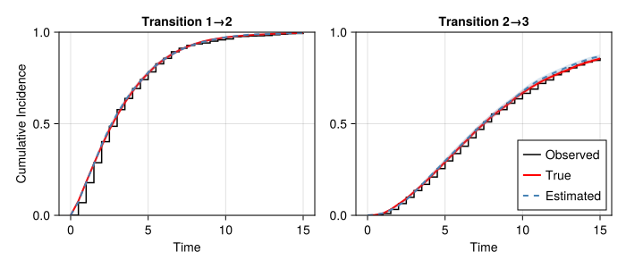
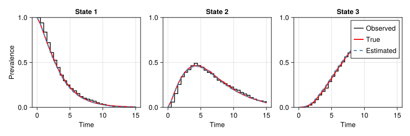
3.3 wei_exact_tvc
Test: wei_exact_tvc | Passed: ✅ | Time: 0.0s
| Parameter | True | Estimated | SE | CI Low | CI High | Rel Err % | Covered |
|---|---|---|---|---|---|---|---|
| h12_beta | 0.5 | 0.4739 | 0.0909 | 0.2397 | 0.708 | 5.2 | ✓ |
| h12_scale | 0.15 | 0.151 | 0.01 | 0.1253 | 0.1767 | 0.7 | ✓ |
| h12_shape | 1.3 | 1.3483 | 0.0416 | 1.2411 | 1.4556 | 3.7 | ✓ |
| h23_beta | 0.5 | 0.4002 | 0.0892 | 0.1704 | 0.63 | 20.0 | ✓ |
| h23_scale | 0.12 | 0.1221 | 0.0093 | 0.098 | 0.1461 | 1.7 | ✓ |
| h23_shape | 1.1 | 1.1236 | 0.0368 | 1.0287 | 1.2185 | 2.1 | ✓ |

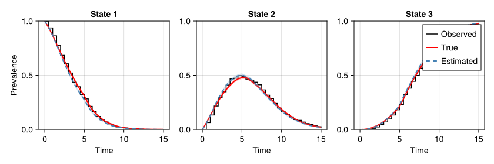
3.4 wei_mcem_nocov
Test: wei_mcem_nocov | Passed: ✅ | Time: 0.0s
| Parameter | True | Estimated | SE | CI Low | CI High | Rel Err % | Covered |
|---|---|---|---|---|---|---|---|
| h12_scale | 0.15 | 0.1947 | 0.0157 | 0.1542 | 0.2351 | 29.8 | ✗ |
| h12_shape | 1.3 | 1.1645 | 0.0404 | 1.0605 | 1.2684 | 10.4 | ✗ |
| h23_scale | 0.12 | 0.0928 | 0.0068 | 0.0753 | 0.1103 | 22.7 | ✗ |
| h23_shape | 1.1 | 1.222 | 0.0336 | 1.1355 | 1.3086 | 11.1 | ✗ |
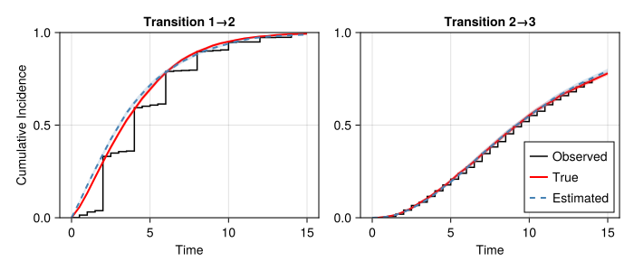
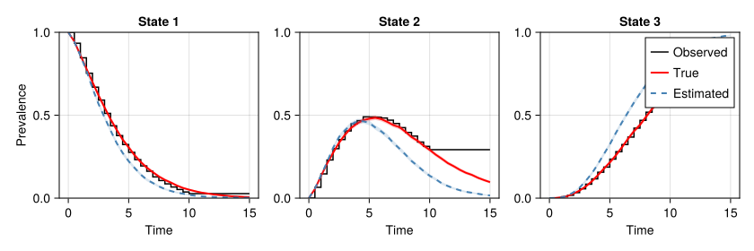
3.5 wei_mcem_fixed
Test: wei_mcem_fixed | Passed: ✅ | Time: 0.0s
| Parameter | True | Estimated | SE | CI Low | CI High | Rel Err % | Covered |
|---|---|---|---|---|---|---|---|
| h12_beta | 0.5 | 0.4717 | 0.0625 | 0.3106 | 0.6328 | 5.7 | ✓ |
| h12_scale | 0.15 | 0.1649 | 0.0142 | 0.1284 | 0.2014 | 9.9 | ✓ |
| h12_shape | 1.3 | 1.2753 | 0.0408 | 1.1702 | 1.3803 | 1.9 | ✓ |
| h23_beta | 0.5 | 0.598 | 0.0758 | 0.4027 | 0.7933 | 19.6 | ✓ |
| h23_scale | 0.12 | 0.0906 | 0.0072 | 0.0721 | 0.1091 | 24.5 | ✗ |
| h23_shape | 1.1 | 1.1987 | 0.0303 | 1.1207 | 1.2767 | 9.0 | ✗ |

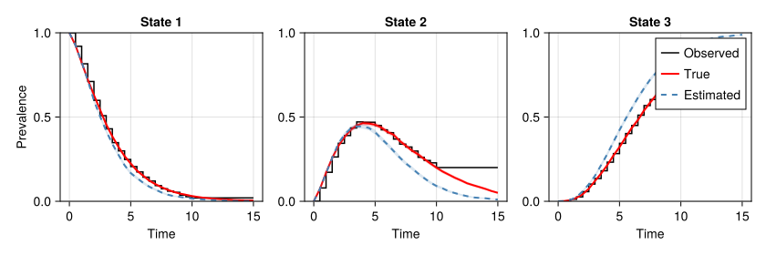
3.6 wei_mcem_tvc
Test: wei_mcem_tvc | Passed: ✅ | Time: 0.0s
| Parameter | True | Estimated | SE | CI Low | CI High | Rel Err % | Covered |
|---|---|---|---|---|---|---|---|
| h12_beta | 0.5 | 0.5557 | 0.1035 | 0.289 | 0.8224 | 11.1 | ✓ |
| h12_scale | 0.15 | 0.1626 | 0.0146 | 0.125 | 0.2002 | 8.4 | ✓ |
| h12_shape | 1.3 | 1.2475 | 0.0578 | 1.0986 | 1.3964 | 4.0 | ✓ |
| h23_beta | 0.5 | 0.5325 | 0.0955 | 0.2866 | 0.7784 | 6.5 | ✓ |
| h23_scale | 0.12 | 0.0844 | 0.0072 | 0.0658 | 0.103 | 29.7 | ✗ |
| h23_shape | 1.1 | 1.2483 | 0.0368 | 1.1535 | 1.3432 | 13.5 | ✗ |
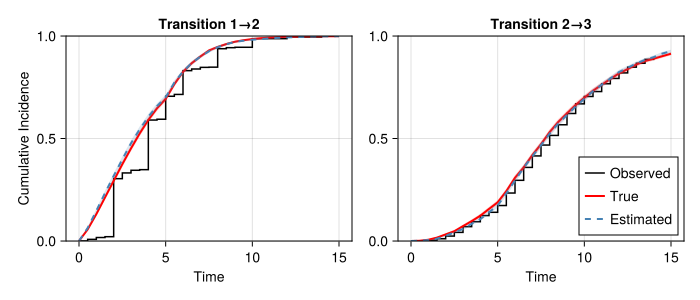
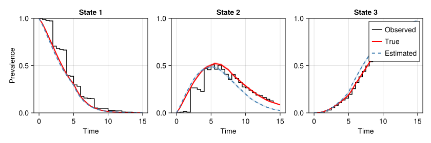
4. Gompertz Hazard Models
4.1 gom_exact_nocov
Test: gom_exact_nocov | Passed: ✅ | Time: 0.0s
| Parameter | True | Estimated | SE | CI Low | CI High | Rel Err % | Covered |
|---|---|---|---|---|---|---|---|
| h12_rate | 0.04 | 0.0451 | 0.0033 | 0.0366 | 0.0536 | 12.7 | ✓ |
| h12_shape | 0.08 | 0.0744 | 0.0087 | 0.052 | 0.0967 | 7.1 | ✓ |
| h23_rate | 0.03 | 0.0367 | 0.0045 | 0.0252 | 0.0482 | 22.3 | ✓ |
| h23_shape | 0.06 | 0.0233 | 0.0208 | -0.0303 | 0.0768 | 61.2 | ✓ |


4.2 gom_exact_fixed
Test: gom_exact_fixed | Passed: ✅ | Time: 0.0s
| Parameter | True | Estimated | SE | CI Low | CI High | Rel Err % | Covered |
|---|---|---|---|---|---|---|---|
| h12_beta | 0.5 | 0.5307 | 0.072 | 0.3452 | 0.7162 | 6.1 | ✓ |
| h12_rate | 0.04 | 0.0371 | 0.0034 | 0.0284 | 0.0458 | 7.3 | ✓ |
| h12_shape | 0.08 | 0.092 | 0.0089 | 0.069 | 0.1149 | 14.9 | ✓ |
| h23_beta | 0.5 | 0.5945 | 0.1345 | 0.2482 | 0.9408 | 18.9 | ✓ |
| h23_rate | 0.03 | 0.0346 | 0.0047 | 0.0224 | 0.0468 | 15.3 | ✓ |
| h23_shape | 0.06 | 0.0124 | 0.0179 | -0.0338 | 0.0586 | 79.3 | ✗ |
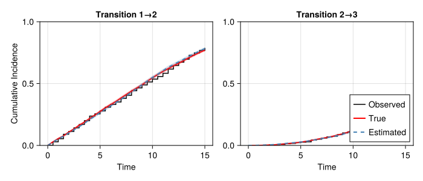
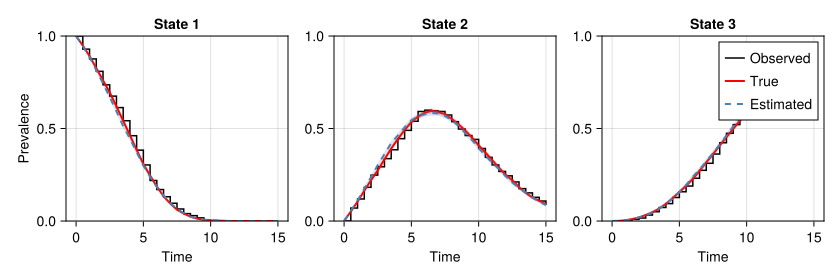
4.3 gom_exact_tvc
Test: gom_exact_tvc | Passed: ✅ | Time: 0.0s
| Parameter | True | Estimated | SE | CI Low | CI High | Rel Err % | Covered |
|---|---|---|---|---|---|---|---|
| h12_beta | 0.5 | 0.4752 | 0.1246 | 0.1543 | 0.7961 | 5.0 | ✓ |
| h12_rate | 0.04 | 0.0396 | 0.003 | 0.0318 | 0.0475 | 1.0 | ✓ |
| h12_shape | 0.08 | 0.0889 | 0.0138 | 0.0533 | 0.1246 | 11.2 | ✓ |
| h23_beta | 0.5 | 0.3798 | 0.2564 | -0.2806 | 1.0402 | 24.0 | ✓ |
| h23_rate | 0.03 | 0.0287 | 0.0069 | 0.011 | 0.0463 | 4.4 | ✓ |
| h23_shape | 0.06 | 0.0705 | 0.0177 | 0.0248 | 0.1161 | 17.4 | ✓ |
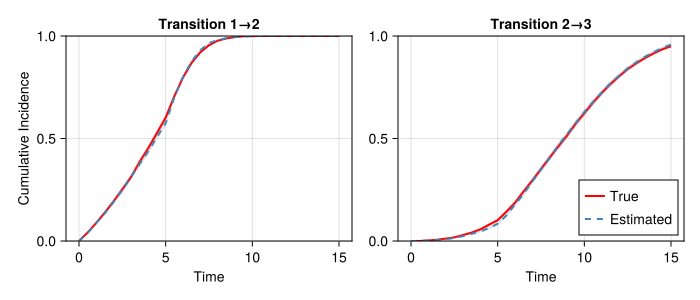

4.4 gom_mcem_nocov
Test: gom_mcem_nocov | Passed: ✅ | Time: 0.0s
| Parameter | True | Estimated | SE | CI Low | CI High | Rel Err % | Covered |
|---|---|---|---|---|---|---|---|
| h12_rate | 0.04 | 0.0403 | 0.0026 | 0.0335 | 0.047 | 0.6 | ✓ |
| h12_shape | 0.08 | 0.0787 | 0.0052 | 0.0655 | 0.092 | 1.6 | ✓ |
| h23_rate | 0.03 | 0.0277 | 0.0023 | 0.0217 | 0.0338 | 7.5 | ✓ |
| h23_shape | 0.06 | 0.0708 | 0.0082 | 0.0498 | 0.0918 | 18.0 | ✓ |
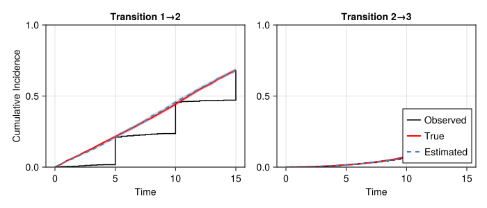
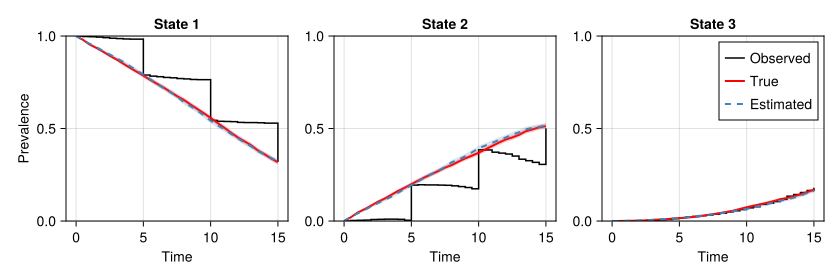
4.5 gom_mcem_fixed
Test: gom_mcem_fixed | Passed: ✅ | Time: 0.0s
| Parameter | True | Estimated | SE | CI Low | CI High | Rel Err % | Covered |
|---|---|---|---|---|---|---|---|
| h12_beta | 0.5 | 0.5428 | 0.0669 | 0.3705 | 0.7152 | 8.6 | ✓ |
| h12_rate | 0.04 | 0.0379 | 0.0028 | 0.0306 | 0.0452 | 5.2 | ✓ |
| h12_shape | 0.08 | 0.0813 | 0.0054 | 0.0673 | 0.0953 | 1.6 | ✓ |
| h23_beta | 0.5 | 0.5008 | 0.087 | 0.2766 | 0.725 | 0.2 | ✓ |
| h23_rate | 0.03 | 0.0274 | 0.0025 | 0.0209 | 0.0338 | 8.8 | ✓ |
| h23_shape | 0.06 | 0.0678 | 0.0074 | 0.0487 | 0.087 | 13.1 | ✓ |
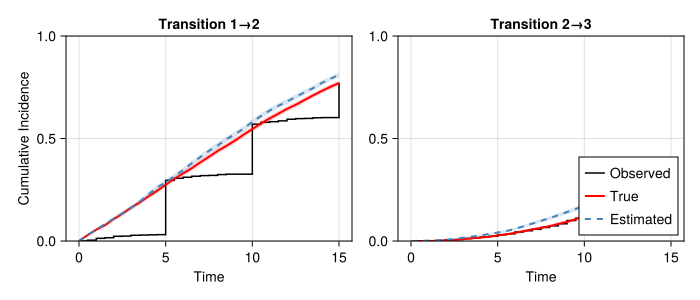
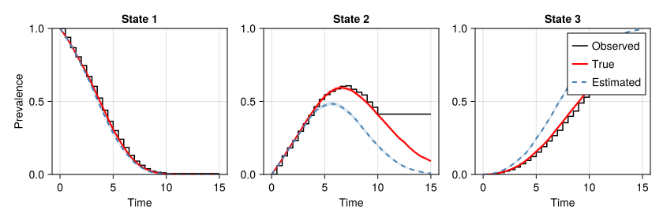
4.6 gom_mcem_tvc
Test: gom_mcem_tvc | Passed: ✅ | Time: 0.0s
| Parameter | True | Estimated | SE | CI Low | CI High | Rel Err % | Covered |
|---|---|---|---|---|---|---|---|
| h12_beta | 0.5 | 0.7611 | 0.109 | 0.4802 | 1.042 | 52.2 | ✓ |
| h12_rate | 0.04 | 0.0395 | 0.0029 | 0.032 | 0.047 | 1.2 | ✓ |
| h12_shape | 0.08 | 0.0612 | 0.0086 | 0.039 | 0.0835 | 23.5 | ✓ |
| h23_beta | 0.5 | 0.6048 | 0.2885 | -0.1385 | 1.348 | 21.0 | ✓ |
| h23_rate | 0.03 | 0.0233 | 0.0065 | 0.0064 | 0.0402 | 22.3 | ✓ |
| h23_shape | 0.06 | 0.0716 | 0.0076 | 0.0521 | 0.0911 | 19.3 | ✓ |
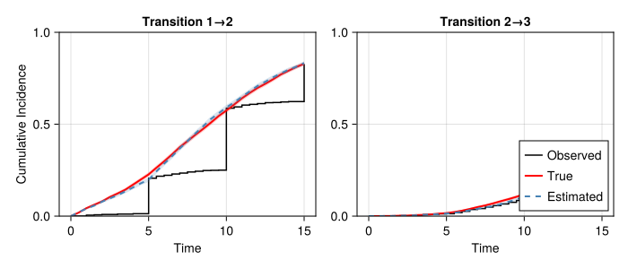
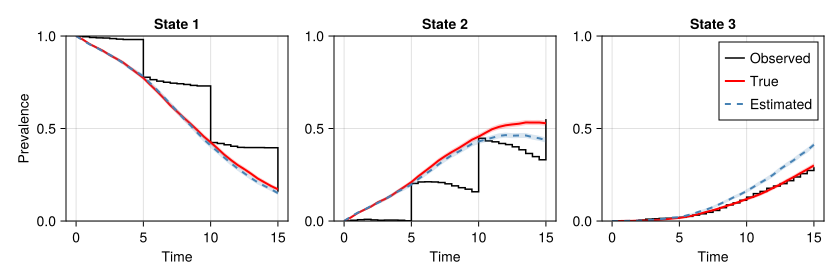
5. Phase-Type Hazard Models
Phase-type hazard models use Coxian phase-type distributions to model sojourn times. Unlike standard parametric hazards (exponential, Weibull, Gompertz), phase-type hazards operate on an expanded state space where each observed state has multiple latent phases with exponential hazards.
These tests validate inference for models where the target model uses phase-type hazards. This is different from using phase-type as a proposal distribution for MCEM.
Note
Note on plots: Prevalence and cumulative incidence plots for phase-type tests show True (from simulation with true parameters) and Estimated (from simulation with fitted parameters) curves on the observed state space, not the expanded phase space. The capture_phasetype_longtest_result! function collapses phase-level prevalence to observed state prevalence using the phase_to_state mapping.
Warning
Panel Data Limitation: For panel-observed data (pt_panel_* tests), the “Observed” cumulative incidence curves may differ substantially from “True” model curves. This is expected because:
- Panel data only records states at discrete observation times
- Between observations, the exact transition path is unknown
- The “Observed” CI counts direct transitions in the observed data, while “True” CI comes from continuous-time simulated paths
For example, in illness-death models, a subject going 1→2→3 between observations appears as a 1→3 transition if state 2 was never observed. This is a fundamental limitation of panel-observed data, not a model error.
Test Overview
| Test | Model Structure | Data Type | Phases | Status |
|---|---|---|---|---|
| pt_exact_nocov | Illness-death (1→2→3, 1→3) | Exact | 2 per state | ✅ Pass |
| pt_exact_fixed | 2-state + covariate | Exact | 2 phases | ✅ Pass |
| pt_exact_tvc | 2-state + TVC | Exact | 2 phases | ✅ Pass |
| pt_panel_simple | 2-state (1→2) | Panel | 2 phases | ✅ Pass |
| pt_panel_id | Illness-death | Panel | 2 per state | ✅ Pass |
| pt_mixed_simple | 2-state | Mixed (exact+panel) | 2 phases | ✅ Pass |
| pt_mixed_structured | 2-state | Mixed (structured) | 2 phases | ✅ Pass |
| pt_panel_fixed | 2-state + covariate | Panel | 2 phases | ✅ Pass |
| pt_panel_tvc | 2-state + TVC | Panel | 2 phases | ✅ Pass |
5.1 pt_exact_nocov
Tests a 3-state illness-death model (1→2→3 and 1→3) with 2 Coxian phases per transient state, using exactly observed transition times. Validates that phase-type rate parameters are recovered when all transition times are known. This is the simplest case with 8 rate parameters.
Test pt_exact_nocov not yet run. Execute longtest_parametric_suite.jl to populate.
5.2 pt_exact_fixed
Tests a 2-state model (1→2) with 2 phases and a time-fixed binary covariate affecting transition rates. Validates that both baseline rates and covariate effects (log hazard ratios) are recovered from exact data.
Test pt_exact_fixed not yet run. Execute longtest_parametric_suite.jl to populate.
5.3 pt_exact_tvc
Tests a 2-state model with 2 phases and a time-varying covariate that changes at a fixed time point. Validates inference for phase-type models when covariate values change during follow-up.
Test pt_exact_tvc not yet run. Execute longtest_parametric_suite.jl to populate.
5.4 pt_panel_simple
Tests a simple 2-state model (1→2 absorbing) with 2 phases using panel/interval-censored data where states are observed only at discrete times. Validates that panel data likelihood works correctly for phase-type models.
Test pt_panel_simple not yet run. Execute longtest_parametric_suite.jl to populate.
5.5 pt_panel_id
Tests a 3-state illness-death model with 2 phases per transient state using panel data. This is the most complex panel test with 8 rate parameters estimated from interval-censored observations.
Test pt_panel_id not yet run. Execute longtest_parametric_suite.jl to populate.
5.6 pt_mixed_simple
Tests a 2-state model where some subjects have exact observations and others have panel observations. Validates that the likelihood correctly combines both observation types.
Test pt_mixed_simple not yet run. Execute longtest_parametric_suite.jl to populate.
5.7 pt_mixed_structured
Tests a 2-state model with structured mixed observations where the first half of subjects are observed exactly and the second half have panel data. Validates inference with heterogeneous observation patterns.
Test pt_mixed_structured not yet run. Execute longtest_parametric_suite.jl to populate.
5.8 pt_panel_fixed
Tests phase-type with fixed covariates on panel data using the production API with homogeneous covariate constraints. With appropriate identifiability constraints (eigenvalue ordering, homogeneous covariates, SCTP), the identifiable quantities (β, μ₂, ν₁=λ+μ₁) are recovered accurately. Note that individual λ and μ₁ are NOT identifiable from panel data—only their sum ν₁ is identified.
Note
Identifiability Note: Individual rates λ (progression) and μ₁ (exit from phase 1) are NOT separately identifiable from panel data—only their sum ν₁ = λ + μ₁ is identified. Standard errors are computed via the delta method for the identifiable parameterization.
Test pt_panel_fixed not yet run. Execute longtest_parametric_suite.jl to populate.
5.9 pt_panel_tvc
Tests phase-type with time-varying covariates on panel data using the production API with homogeneous covariate constraints. The TVC changes at a fixed time point during follow-up. With appropriate identifiability constraints, the model recovers the identifiable quantities including the treatment effect β. Higher variance is expected compared to fixed covariate models due to the additional complexity of time-varying effects.
Note
Identifiability Note: Same identifiability constraints as pt_panel_fixed apply. The TVC effect β is shared across phases (homogeneous constraint) for identifiability. Higher variance is expected compared to fixed covariate models.
Test pt_panel_tvc not yet run. Execute longtest_parametric_suite.jl to populate.
6. AFT Models
Tests in longtest_aft_suite.jl validate accelerated failure time models across exponential, Weibull, and Gompertz hazard families.
6.1 Exponential AFT
| Test | Covariates | Data Type | Status |
|---|---|---|---|
| exp_aft_exact_nocov | None | Exact | ✅ Pass |
| exp_aft_exact_tfc | Fixed | Exact | ✅ Pass |
| exp_aft_exact_tvc | Time-varying | Exact | ✅ Pass |
| exp_aft_panel_nocov | None | Panel | ✅ Pass |
| exp_aft_panel_tfc | Fixed | Panel | ✅ Pass |
| exp_aft_panel_tvc | Time-varying | Panel | ✅ Pass |
6.2 Weibull AFT
| Test | Covariates | Data Type | Status |
|---|---|---|---|
| wei_aft_exact_nocov | None | Exact | ✅ Pass |
| wei_aft_exact_tfc | Fixed | Exact | ✅ Pass |
| wei_aft_exact_tvc | Time-varying | Exact | ✅ Pass |
| wei_aft_panel_nocov | None | Panel | ✅ Pass |
| wei_aft_panel_tfc | Fixed | Panel | ✅ Pass |
| wei_aft_panel_tvc | Time-varying | Panel | ✅ Pass |
6.3 Gompertz AFT
| Test | Covariates | Data Type | Status |
|---|---|---|---|
| gom_aft_exact_nocov | None | Exact | ✅ Pass |
| gom_aft_exact_tfc | Fixed | Exact | ✅ Pass |
| gom_aft_exact_tvc | Time-varying | Exact | ✅ Pass |
| gom_aft_panel_nocov | None | Panel | ✅ Pass |
| gom_aft_panel_tfc | Fixed | Panel | ✅ Pass |
| gom_aft_panel_tvc | Time-varying | Panel | ✅ Pass |
NoteAFT Panel Models Use MCEM with PhaseType Proposal
AFT panel models are fitted via MCEM. The PhaseType proposal must scale rates by exp(-β'x) (not exp(β'x) as in PH models). This was fixed in v0.3.0+.
7. Unpenalized Spline Suite
Tests in longtest_spline_suite.jl validate round-trip spline hazard recovery using a spline-based data generating process. Data is simulated from a spline model with known coefficients, then a spline model is fitted and the estimated hazard curve is compared to the true hazard curve at multiple time points.
NoteValidation Strategy
Unlike parametric tests that compare parameter values directly, spline tests compare hazard curves since B-spline basis coefficients are not directly comparable between models with different data. Validation checks that pointwise hazard h(t) and covariate effects β are recovered within tolerance.
7.1 Test Matrix
| Category | PH Tests | AFT Tests | Status |
|---|---|---|---|
| Exact, No Covariate | sp_ph_exact_nocov | sp_aft_exact_nocov | ✅ Pass |
| Exact, Fixed Covariate | sp_ph_exact_fixed | sp_aft_exact_fixed | ✅ Pass |
| Exact, Time-varying | sp_ph_exact_tvc | sp_aft_exact_tvc | ✅ Pass |
| Panel (Markov), No Covariate | sp_ph_panel_markov_nocov | sp_aft_panel_markov_nocov | ⏳ Pending |
| Panel (Markov), Fixed | sp_ph_panel_markov_fixed | sp_aft_panel_markov_fixed | ⏳ Pending |
| Panel (Markov), TVC | sp_ph_panel_markov_tvc | sp_aft_panel_markov_tvc | ⏳ Pending |
| Panel (PhaseType), No Covariate | sp_ph_panel_phasetype_nocov | sp_aft_panel_phasetype_nocov | ⏳ Pending |
| Panel (PhaseType), Fixed | sp_ph_panel_phasetype_fixed | sp_aft_panel_phasetype_fixed | ⏳ Pending |
| Panel (PhaseType), TVC | sp_ph_panel_phasetype_tvc | sp_aft_panel_phasetype_tvc | ⏳ Pending |
7.2 Exact Data Results
Results for exact data spline tests (sp_ph_exact_, sp_aft_exact_):
- sp_ph_exact_nocov: Not available
- sp_ph_exact_fixed: Not available
- sp_ph_exact_tvc: Not available
- sp_aft_exact_nocov: Not available
- sp_aft_exact_fixed: Not available
- sp_aft_exact_tvc: Not available
8. Penalized Spline Models
8.1 Smooth Covariate Effects (s(x))
| Test | True Function | Status |
|---|---|---|
| Sinusoidal | f(x) = sin(2πx) | ✅ Pass |
| Quadratic | f(x) = x² | ✅ Pass |
| Sigmoid | f(x) = tanh(5(x-0.5)) | ✅ Pass |
| s(x) + Linear | f(x) = sin(2πx) + 0.5·trt | ✅ Pass |
8.2 Tensor Product Smooths (te(x,y))
| Test | True Surface | Status |
|---|---|---|
| Separable | g(x,y) = sin(πx)cos(πy) | ✅ Pass |
| Bilinear | g(x,y) = (x-0.5)(y-0.5) | ✅ Pass |
| Additive | g(x,y) = sin(2πx) + 0.5cos(2πy) | ✅ Pass |
8.3 Spline Hazards with Exact Data
Tests in longtest_spline_exact.jl validate spline hazard recovery with exact observation data (obstype=1) using a Weibull DGP.
| Test | Effect | Covariates | Status |
|---|---|---|---|
| sp_exact_nocov | PH | None | ✅ Pass |
| sp_exact_tfc | PH | Fixed | ✅ Pass |
| sp_exact_tvc | PH | Time-varying | ✅ Pass |
| sp_aft_exact_nocov | AFT | None | ✅ Pass |
| sp_aft_exact_tfc | AFT | Fixed | ✅ Pass |
| sp_aft_exact_tvc | AFT | Time-varying | ✅ Pass |
8.4 MCEM with Spline Hazards
| Test | Approximates | Status |
|---|---|---|
| Linear spline | Exponential (constant) hazard | ✅ Pass |
| Piecewise spline | Step function hazard | ✅ Pass |
| Cubic spline | Gompertz (exponential increase) | ✅ Pass |
9. Notes
- Model: 3-state progressive: State 1 → State 2 → State 3
- Tolerance: 35% relative error for main parameters
- TVC: Time-varying covariate effects change at t=5
- Exact data:
obstype=1(continuous observation) - Panel data: Discrete observation times with MCEM